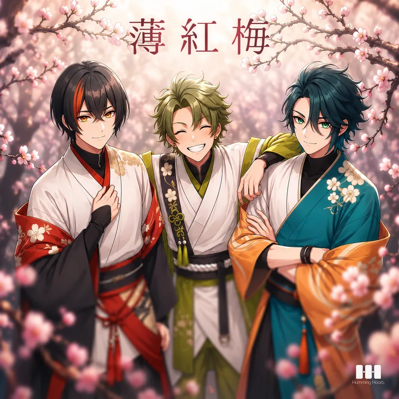
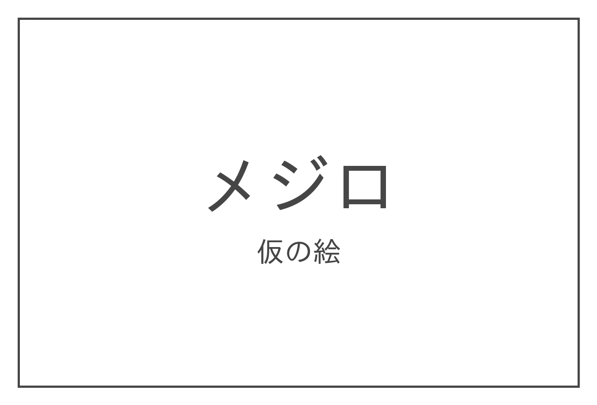

Release2026.08.12Lyrics川瀬帝翔Music燕谷航薄紅梅
トリアティーク
もったいないでしょ？全部やってみてからじゃないと
Sennosuke Mejiro
茶道家の三男。家を継ぐ気はなく、自分から帝翔と航を誘ってトリアティークを結成。最年少ながらリーダーを自負する。表裏のない真っ直ぐな性格でユニットのムードメーカー。
茶道家の三男。家を継ぐ気はなく、自分から帝翔と航を誘ってトリアティークを結成。最年少ながらリーダーを自負する。表裏のない真っ直ぐな性格でユニットのムードメーカー。

メジロは目のまわりの白いリングが特徴。蜜が大好きで、桜の季節になると花から花へ忙しく飛び回り、春の到来を告げる小さな使者として親しまれています。